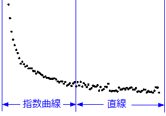

検索ボタンをクリックすると、検索ダイアログの右上角にFitting Function Library アプリのアイコンがあります。このアイコンをクリックすると、ダウンロード可能な関数のリストが表示されます。また、キーワードで関数を検索しても見つからない場合は、Fitting Function Libraryアプリを開いて、アドオンの関数を参照することができます。このアプリはOriginの最新バージョンにプレインストールされています。
非線形フィット（NLFit)ツールには、200以上の 組込関数があり、広い範囲のカテゴリーと分野から選択されています。探している関数がない場合は、Originのフィット関数ビルダを使って関数を定義することができます。
Originでは、NLFitダイアログを開く前に、ワークシートやグラフからの入力データを事前に選択できます。NLFitダイアログを開くと、設定タブのデータ選択ページにある入力データの項目で、データを変更、追加、移動、リセットできます。
必要に応じて、複数のワークシート列、ワークシート列の一部、ワークシート列の不連続部分を選択できます。不連続区間を選択したいときは、Ctrlキーを押しながら操作します。
グラフウィンドウがアクティブな場合、アクティブレイヤのアクティブ曲線が、フィッティングの入力として事前選択されます。
他のデータの事前選択する場合は以下のオプションを使用できます。
Originの組込フィット関数には、パラメータ初期化コードにより、フィッティング前に、パラメータ初期値をデータセットに適用します。
数回のクリックで、曲線フィットを実行して、最適なフィットパラメータを得ることが可能です。元のデータプロットにフィット曲線を貼り付けることもできます。
|
検索ボタンをクリックすると、検索ダイアログの右上角にFitting Function Library アプリのアイコンがあります。このアイコンをクリックすると、ダウンロード可能な関数のリストが表示されます。また、キーワードで関数を検索しても見つからない場合は、Fitting Function Libraryアプリを開いて、アドオンの関数を参照することができます。このアプリはOriginの最新バージョンにプレインストールされています。 |
NLFitツールを使用した非線形フィットの操作を簡単にするために、Originのメインメニューの解析: フィットの下に多くのクイックメニューを用意しています。
解析：フィット：陰関数カーブフィットメニューを選択すると、カテゴリとしてImplicit を選択した状態でNLFitツールが開きます。このサンプルで陰関数での簡単なフィット操作を確認できます。
解析：フィット：非線形曲面(3D)フィットメニューを選択すると、カテゴリとしてSurface を選択した状態でNLFitツールが開きます。このチュートリアルで曲面フィット操作を確認できます。
解析：フィット：指数曲線フィットメニューを選択すると、カテゴリとして Exponentialを選択した状態でNLFitツールが開きます。このサンプルで指数関数での簡単なフィット操作を確認できます。
解析：フィット：単一ピークフィットメニューを選択すると、カテゴリとしてPeak Functionsを選択した状態でNLFitツールが開きます。このサンプルでピーク関数を使った簡単なピークフィットの操作を確認できます。
解析：フィット：シグモイド曲線フィットメニューを選択すると、カテゴリとして Growth/Sigmoidalを選択した状態でNLFitツールが開きます。このサンプルでシグモイド関数での簡単なフィット操作を確認できます。
組込関数ライブラリに欲しいフィット関数がないのですが、どうしたらよいでしょうか。問題ありません。ツール：フィット関数ビルダーをカスタムフィット関数の定義のガイドに沿って、簡単に使うことができます。
同時にフィットを行いたい複数のデータがありますか？Originでは、各データセットを別々にフィットさせて、結果を別のレポートや統合したレポートに出力することができます。また、パラメータを共有してグローバルフィットを実行したり、フィット前に複製データを単一のデータセットに結合する連結フィットを実行できます。
フィット関数のパラメータは、オプションですべてのデータセット間で共有できます。
|
グローバルフィットについての詳細は、パラメータ共有でのグローバルフィットページを参照してください。 |
複製データの場合、すべてのデータポイントを1つの曲線に連結し、それらをデータセット全体としてフィットできます。
|
連結フィットについての詳細は、複製データのフィットページを参照してください。 |
複数曲線を個別にフィットできます。複数曲線の独立フィットでは、1つずつフィットを実行して、個別レポートを各曲線について作成するか、統合レポートを作成することができます。
カーブフィット分析で微調整が必要な場合もあります。Originでは、カーブフィット処理をフルコントロールできます。
|
線形制約の入力方法はこの表を確認してください。 |
基本のフィットオプションに加えて、さらに詳細なフィットを行うための拡張オプションを使うことができます。
ステップ1.直交距離回帰(ODR )反復アルゴリズムを選択します。
ステップ2.適切な重み付け方法を選択します。

|
XからYを検索またはYからXを検索についての詳細情報は、X/YからY/Xを検索 – 標準曲線ページを参照してください。 |
このチュートリアルで陰フィット関数の定義方法を紹介しています。
どの積分関数でフィットできるおよび、フィット関数の定義方法を紹介します。
ここで、 は積分の独立変数で、
は積分の独立変数で、  はフィッティングの独立変数です。モデルのパラメータ
はフィッティングの独立変数です。モデルのパラメータ 、
、 、、
、、 はサンプルデータから取得したいフィットパラメータです。
はサンプルデータから取得したいフィットパラメータです。
詳細は、チュートリアルをご覧ください。
^2}{2b^2}-xt}\, dt)")
aとbはフィット関数内のパラメータです。
初期パラメータ： a=1e-4, b=1e-4積分関数には、中心が約a、幅が2bのピークが含まれています。また、ピークの幅（2e-4）は、積分間隔[0,1]と比較して非常に狭くなっています。正しくピークの中心あたりで積分される事を確認するために、積分範囲である[0,1] は3つの区間[0,a-5*b]、[a-5*b,a+5*b]、[a+5*b,1]に分けられています。この区分内で積分が施され、最終的に合計します。
詳細は、チュートリアルをご覧ください。
^2}{w^2}}, dt")
フィット関数には4つのパラメータがあり、そのうち3つを被積分関数に受け渡し、独立変数を上限として積分を行います。よって、まず被積分関数を定義しし、組み込みのintegral()関数を使用してフィット関数内で積分をします。
詳細は、チュートリアルをご覧ください。
Originでは、本質的に区分線形カテゴリー内の2つのコンボリューション関数が使われます。
新しいコンボリューション関数を作成する必要がある場合は、下のチュートリアルをご覧ください。

^2}{w_2^2}}+(f\;*\;g)(x)")
ここで、
=\frac{1}{w_1\sqrt{\pi/2}}e^{-\frac{2x^2}{w_1^2}}") .
.そして  ,
,  ,
,  , s,
, s,  ,
,  ,
,  はフィットパラメータです。
はフィットパラメータです。 ,
,  ,
,  ,
,  ,
,  はフィット関数内の定数です。
はフィット関数内の定数です。
詳細は、チュートリアルをご覧ください。
この実験は、以下に示すように、出力信号がガウス応答を持つ指数減少関数のコンボリューションであると見なしています。
これで、出力信号と応答データを得たので、信号を次のモデルでフィットして、指数減少関数を得ることができます。

詳細は、チュートリアルをご覧ください。
ピークをデコンボリューションする必要がある場合には、このチュートリアルをご覧ください。
Originでは、Piecewise カテゴリー内の2つの区分関数が使われます。
新しい区分関数を作成する必要がある場合は、下のチュートリアルをご覧ください。

上記のグラフから、曲線は2つの部分に分けられる部分からできていることが分かります。これは区分線形関数を使ってフィットすることができます。この関数は次のように表現できます。
+y_3(x-x_1)}{x_3-x_1}, & \mbox{if } x<x_3 \ \frac{y_3(x_2-x)+y_2(x-x_3)}{x_2-x_3}, & \mbox{if } x \ge x_3 \end{cases}")
x1とx2は曲線の終着点を示すｘ値で、フィット中に固定されます。x3は2つの部分の交点のx値を示しています。そしてy1、y2、y3は 地点でのy値をそれぞれ表しています。
地点でのy値をそれぞれ表しています。
詳しくは、こちらのチュートリアルをご覧ください。

上記のグラフから、曲線は、以下の式で定義されるとおり、指数曲線区分と直線区分から成り立っています。

詳しくは、こちらのチュートリアルをご覧ください。
Originでは、Multiple Variablesカテゴリー内の3つの複数変数の関数が使われます。
新しい複数変数の関数を作成する必要がある場合は、下のチュートリアルをご覧ください。

GaussianLorentz関数はGaussianとLorentz関数の組み合わせで、y0とxcの値を共有しています。
^2}{w_1^2}}")
 ^2+w_2^2}")
詳しくは、こちらのチュートリアルをご覧ください。
ここで、x1とx2は、独立変数で、ki、km、vmは、フィットパラメータです。
詳しくは、こちらのチュートリアルをご覧ください。
Originで複素関数でフィットするには、複素数データの実部と虚部を2つの異なる列に、2つの従属変数として分ける必要があります。
以下に、複素関数の定義方法の例を示します。
complex cc = A/(1+1i*omega*tau); y1 = cc.m_re; y2 = cc.m_im;
ここで、1iは、虚数単位「i」として使われ、omegaは、独立変数、A, tauは、フィッティングパラメータ、y1とy2は、 ccの実部と虚部です。
Originでは、NAG関数を呼び出し、1次または高次の常微分方程式（ODE）を定義することができます。
以下に1階常微分方程式のフィット方法の例を示します。


ここで、aは常微分方程式 のパラメータで、y0はODEの初期値です。このODEの問題を解決するために、Runge–Kuttaメソッドを使用して、NAG関数 d02pvc と d02pcc が呼び出されます。
詳しくは、こちらのチュートリアルをご覧ください。
Origin C 関数は、C、C++、Fortranコンパイラーによって作成された外部DLLの関数を呼び出すことができます。これには、ソースファイルが外部DLL内の関数を宣言するヘッダファイル用の指示文を含んでいる必要があります。
以下に、 GNU Scientific LibraryのGSLを使って下記モデルをフィットする方法の例を示します。

詳しくは、こちらのチュートリアルをご覧ください。
サードパーティ製DLL関数の呼び出しについての詳細は、このページを参照してください。
Originでは、新しいフィット関数を定義する際に、組込関数を引用することができます。
以下は、2つのガウス関数の統合として考えられる、歪曲ガウスピークをフィットする方法です。これらの2つのガウス曲線は、基線とピークの中心(xc)を共有し、ピークの幅(w) と振幅 (A)が異なっています。
次のように関数を定義します。
y = x<xc? nlf_Gauss(x, y0, xc, w1, A1) : nlf_Gauss(x, y0, xc, w2, A2);
ここで、nlf_Gauss() は組み込みのGauss関数です。
詳しくは、こちらのチュートリアルをご覧ください。